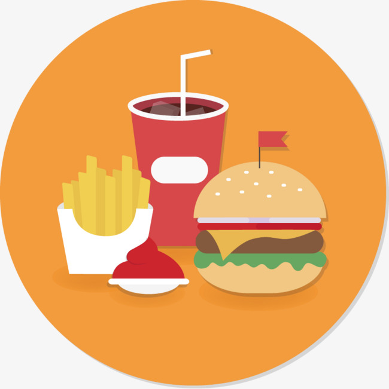
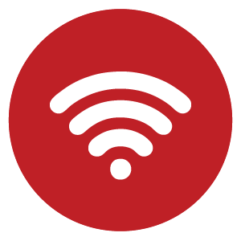

<!--
  Generated template for the FiltroServiciosPage page.

  See http://ionicframework.com/docs/components/#navigation for more info on
  Ionic pages and navigation.
-->
<ion-header>

  <ion-navbar>
    <ion-title>filtroServicios</ion-title>
  </ion-navbar>

</ion-header>


<ion-content padding>

<h5> ¿Qué servicios quieres ver?</h5>

<ion-list>
  <ion-item>
    <ion-label><ion-avatar></ion-avatar> Higiene</ion-label>
    <ion-checkbox [(ngModel)]="a"></ion-checkbox>

  </ion-item>

  <ion-item>
    <ion-label><ion-avatar></ion-avatar> Electricidad</ion-label>
    <ion-checkbox [(ngModel)]="b"></ion-checkbox>
  </ion-item>

  <ion-item>
    <ion-label><ion-avatar></ion-avatar> alimentación</ion-label>
    <ion-checkbox [(ngModel)]="c"></ion-checkbox>
  </ion-item>

  <ion-item>
    <ion-label><ion-avatar></ion-avatar> Wifi</ion-label>
    <ion-checkbox [(ngModel)]="d"></ion-checkbox>
  </ion-item>

</ion-list>

<button ion-button block btn-warning>Siguiente</button>

</ion-content>
